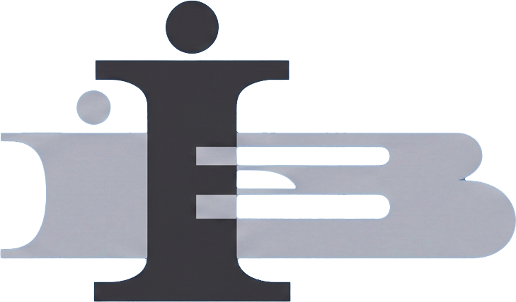
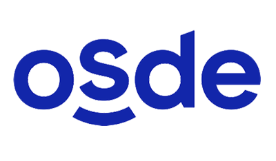
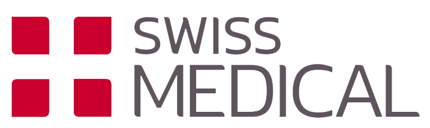
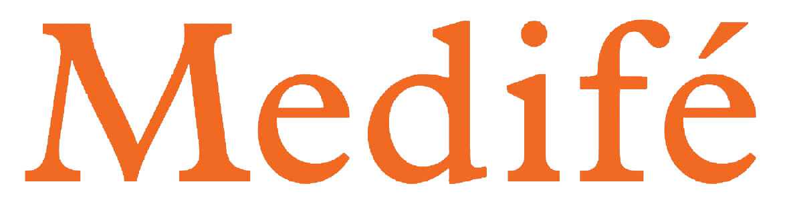

0 años
De trayectoria
0 profesionales
En un mismo equipo
0+ especialidades
Atención integral
Consultorios médicos
Atención clínica en 7 especialidades e investigación médica activa. Pedí tu turno por WhatsApp — sin vueltas, sin esperar a que abramos.

Nuestras especialidades
Diagnóstico y seguimiento de patologías endocrinas y diabetes, con el equipo que le dio origen al instituto.
Pedir turnoPlanes nutricionales y abordaje funcional, adaptados a cada paciente.
Pedir turnoSeguimiento endocrinológico especializado en niños y adolescentes.
Pedir turnoNeurorehabilitación, drenajes linfáticos y RPG, con seguimiento personalizado.
Pedir turnoCómo pedir tu turno
Elegís la especialidad y tu obra social.
Te armamos el mensaje de WhatsApp.
Lo enviás y confirmamos día y horario.
Cobertura médica




Por qué elegirnos
45 años de historia en Santa Fe.
Tecnología médica de última generación.
Trabajamos con distintas obras sociales y prepagas.
Investigación con resultados en revistas internacionales.
Cada paciente, seguido por su especialista.
Preguntas frecuentes
Por WhatsApp: elegís la especialidad en esta web y te escribimos para coordinar día y horario.
Sí, trabajamos con distintas obras sociales y prepagas, además de atención particular. Contanos la tuya por WhatsApp y te confirmamos la cobertura.
Las dos cosas: atendemos pacientes y además llevamos adelante investigación básica y estudios clínicos, con publicaciones en revistas internacionales.
Depende de la especialidad y de tu cobertura. Contanos tu caso por WhatsApp y te decimos exactamente qué necesitás traer.
Sí. Al pedir tu turno podés indicarnos si ya conocés a algún profesional del equipo, o te asignamos uno según la especialidad y disponibilidad.
En 9 de Julio 2618, Santa Fe. Atendemos de forma presencial, de lunes a viernes de 8 a 20hs.

Estamos para ayudarte
Escribinos por WhatsApp y coordinamos tu turno en el momento.
Escribinos ahora